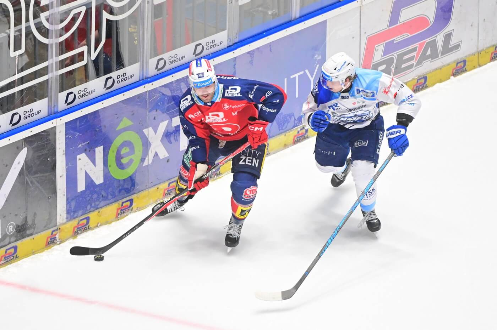

Napsal: Martin Klapuš
Datum: březen 2026
Bylo teprve půl páté ráno, když se před brněnským hlavním nádražím začaly sbíhat první postavy v modrobílých dresech. Termoska s kávou, šála uvázaná jak je správné, těsně a dvakrát, a v očích ten pohled, který každý hokejový fanoušek zná. Dnes je důležitý zápas. Autobus, který klub pronajal pro věrné fanoušky, měl kapacitu padesáti míst. Obsazen byl do posledního. Na listině jmén nechyběli věrní dědové, kteří jezdí na každý venkovní zápas Komety od devadesátých let, ani dvě studentky, které si kvůli výjezdu vzaly volno v práci. Hokej, jak se zdá, nikoho nevybírá.
Autobus vyrazil přesně v pět hodin. Řidič, chlapík jménem Ladislav, který tvrdil, že fandí Spartě, ale dneska drží palce Brnu, naladil povzbudivé rádio a brzy se rozvinula všeobecná debata o sestavě. Má Kometa hrát s Pospecem na přesilovce? Je Zbořil fit? Proč trenér nevyužívá třetí lajnu víc? Za Vyškovem se autobus přidal na dálnici a debata se trochu utišila. Lidé si brali jídlo z tašek, četli noviny nebo jen koukali do tmy za oknem. Někde vzadu začal starší pán Karel, jak se pak ukázalo, osmašedesátník z Líšně skandovat. Přidalo se pár hlasů. Pak víc. Nikdo to moc od tak starého pána nečekal. „Mám za sebou čtyři finálové série s Kometou. Dvakrát jsme vyhráli, dvakrát prohráli. Tentokrát to cítím dobře." - Karel, fanoušek od roku 1987
Autobus zaparkoval nedaleko Enteria Areny ve čtvrt na deset. Před halou bylo živě, stovky červenobílých dresů Dynama proudily od zastávek a parkovišť. Fanoušci Komety, jichž dorazilo celkem přes tři stovky z různých koutů Moravy, se poznávali pohledem a spontánně se seskupovali. Okolí arény je vždy zvláštní podívaná. Stánky s klobásami a hořčicí, prodejci šál a čepic, skupinky teenagerů s namalovanými tvářemi. Děda Karel si koupil horký čaj a prohlásil, že Pardubice sice mají dobrou arenu, ale co je platná, když v ní hrají takovéhle mužstvo. Pár projíždějících pardubických fanoušků se zastavilo a přijatelně přátelsky diskutovalo o vyhlídkách série. Atmosféra byla ostrá, ale fair.
Dostali jsme svůj sektor v horní části arény. Když se tam fanoušci Komety usídlili, okamžitě rozvěsili transparenty. „Modrobílí fanatici, nezvaní hosté on tour!" takový byl ten největší. Zbytek arény to uvítal hlukem, který byl zřejmě míněn podrážděně, ale ve skutečnosti zněl trochu jako uznání. Zápas začal rychle. Dynamo šlo do vedení ve druhé minutě,. Hostující sektor ztichl, ale jen na vteřinu. Pak zase začal. „Přece se nic nestalo, jeden gól je furt málo!” Fanoušci zůstávají věrní, jako při každém zápase. Do druhé třetiny všichni vstupovali optimističtí, skoré stále jen 1:0 a odpočatí hráči se na vrhnuli na led jak nikdy, někteří až moc. Komeťák Jan Zdráhal dostal vyloučení, na které Pardubice hned odpověděly a zvýšili skóre na dva nula. To si ale modrobílí kluci nenechali líbit a s hlasitými fanoušky v zádech nasázeli brankáři Subbanovi tři banány za 3 minuty. Celá tribuna řvala, ozývaly se pokřiky sem a tam, avšak ne na dlouho. Pardubice opět skóre otočili na jejich stranu a do třetí třetiny šli s jedno gólovým náskokem. „Taková atmosféra se zažít nedá jinak než tady. Ne u televize, ne v hospodě. Jedině v té hale." - Jana, 24 let, první venkovní zápas Třetí třetina všem komeťákům zlomila srdce. Pardubice opět dali gól hned na začátku třetiny a s ním i dva další. Hlavní trenér komety Jiří Horáček konání Aleše Stezky v bráně už nesnesl a rozhodl se ho vyměnit za Gašpera Krošelje. Tento debakl neunesl ani útočnik Tomáš Zohrona, který dostal trest do konce utkání za úder hlavou. Zápas skončil 8:4, tým ze sebe vydal maximum ale nebylo to dost, hráči sklidli potlesk a odjeli do kabiny. Série pokračuje dál, domů do Brna.
